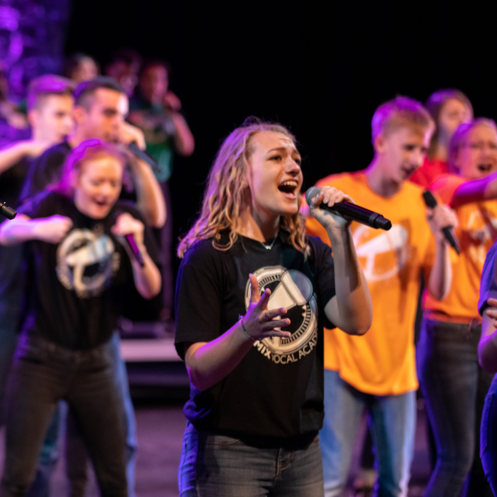
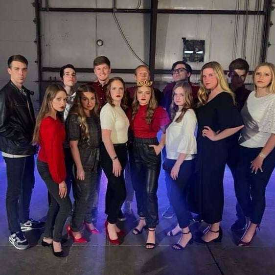
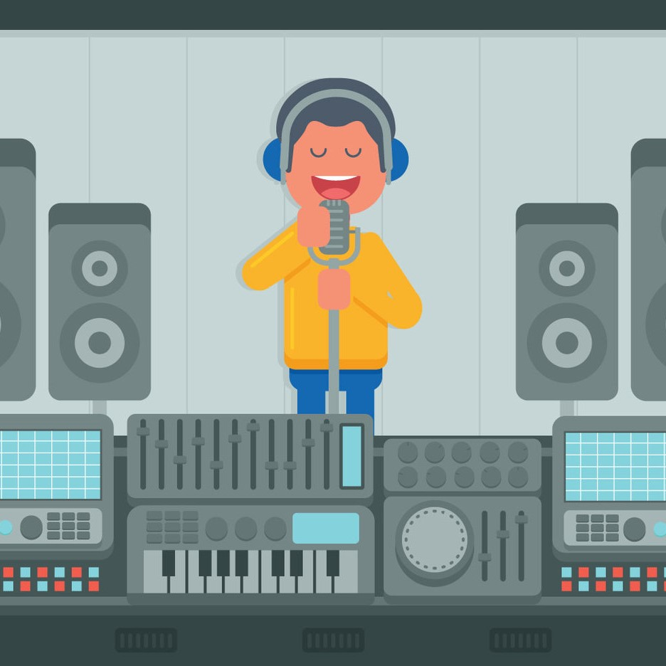

Our Story
-
.jpg)
December 2007
Our Humble Beginnings
In the Christmas season of 2007 I took my first big steps on stage at the young age of 4, singing "I Saw Mommy Kissing Santa Clause." From that moment on I craved the performance experience and longed to take my voice to new heights.
-

2008-2021
A Musician is Born
Every aspect of growing up included music for me. Children's chorus, school choir, marching band, soloing in church meetings, a cappella camp, recording a Christmas album with some friends, arranging music, you name it and I probably tried it out. Music was (and is) a huge part of who I am.
-

2021-2022
Let's Do This For Real
As all musicians do, I needed to decide what I wanted for my future in music once it was time to graduate high school. Ultimately I decided to continue running with a cappella music and joined the BYU a cappella club singing in Dynamite. I also continued singing chorally in the University Chorale, took voice lessons, began taking courses to minor in music, and taught amature voice lessons in the summer of 2022.
-

Present Day
Pristine Vocal Studio
With many years of musical learning, training, and performing, today I have a vision here at Pristine to give people of all ages the opportunity to feel the same passion in music as I do, and to sharpen their skills to share them. As we improve in our talents, more and more people are able to receive joy through our choice to share with them. Let's take our voices to the next level together.
-
Be Part
Of Our
Story!
.png)